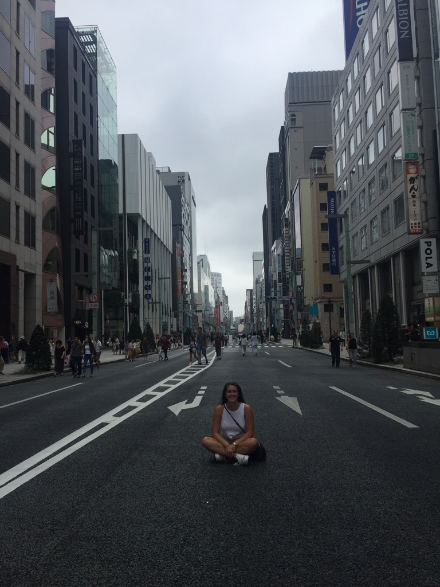
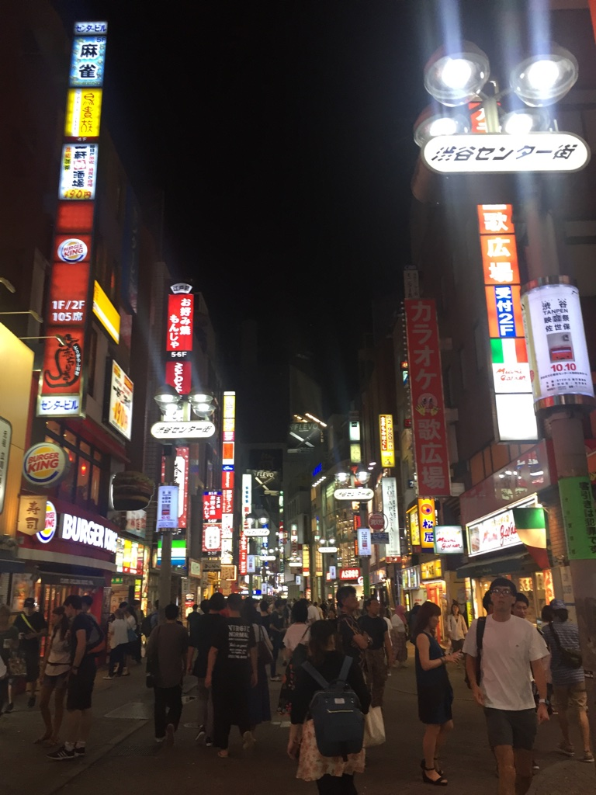
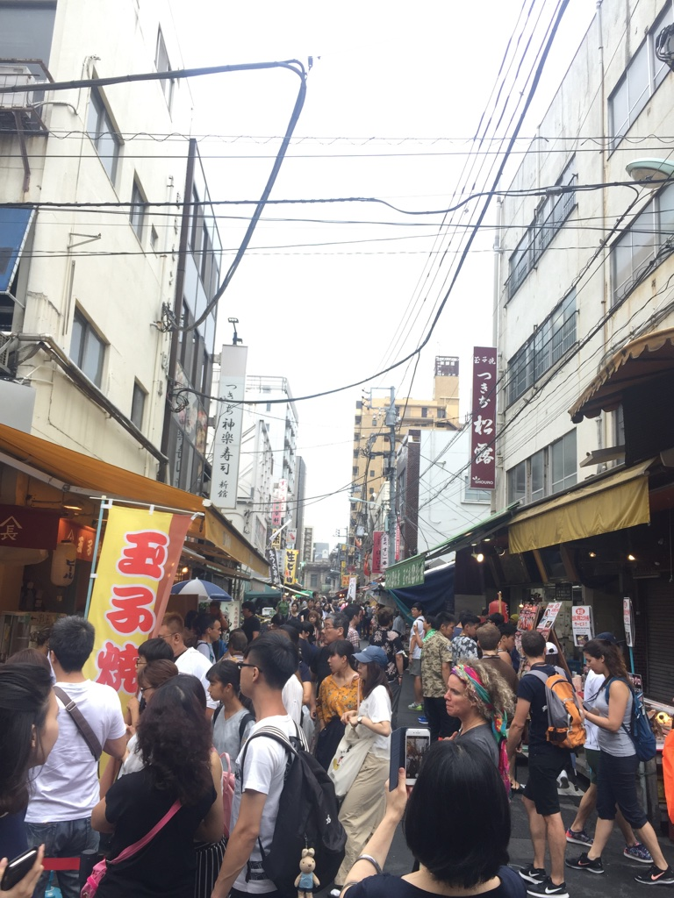
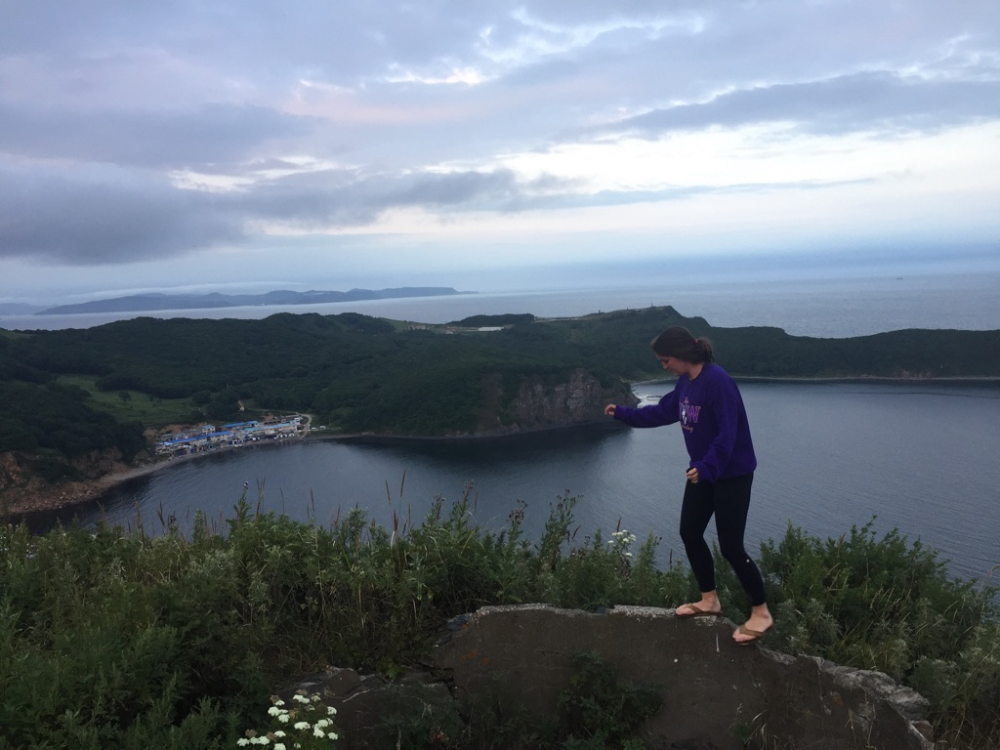
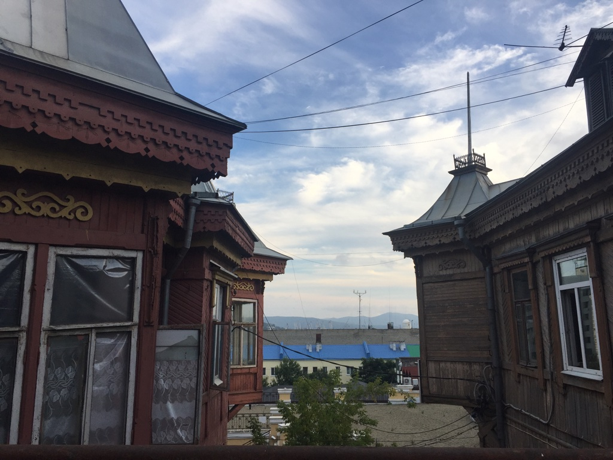
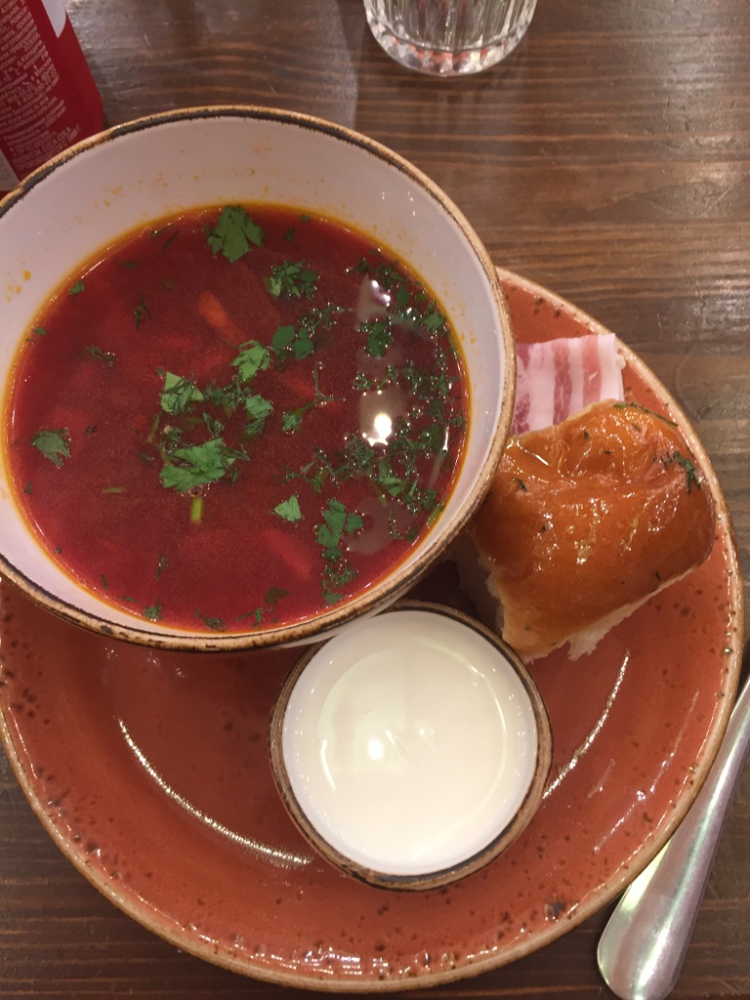
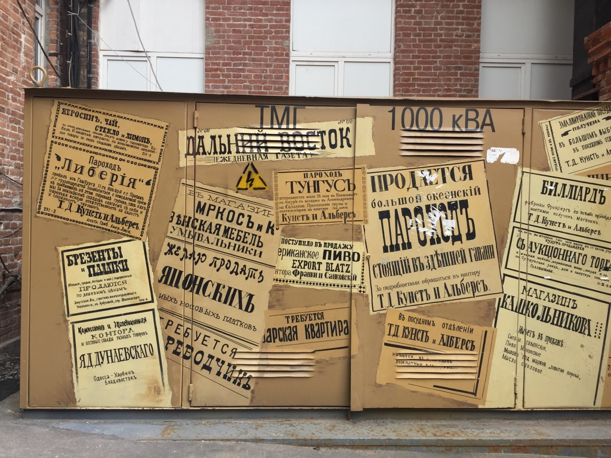
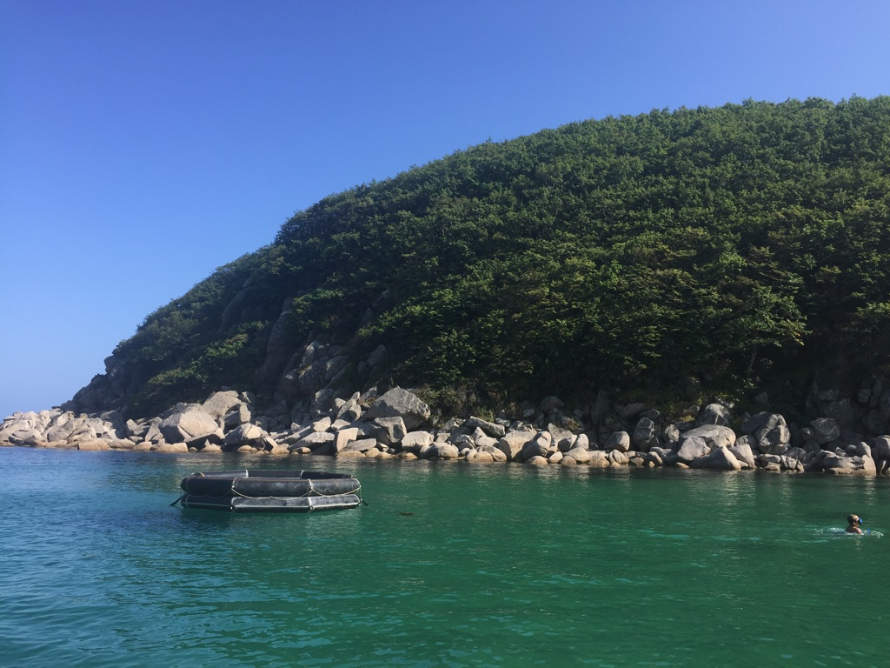
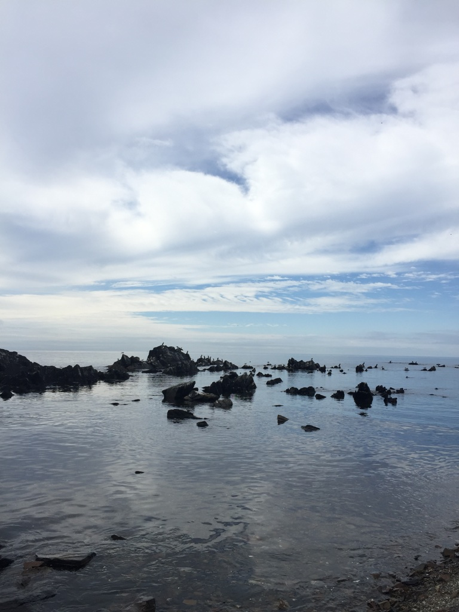

Asia is a continent so different from how I grew up, I love exploring the culture and being out of
my comfort zone. There is still so much to explore, but here are my travels so far.
Japan
Tokyo
Tokyo is a CITY. I was on the subway for almost an hour one day, and still hadn't left the city limits.
It is huge. Tokyo is also the first city I visited that has a completely different alphabet, which creates for some interesting
travel mishaps. Like not being able to figure out that the subway line switches direction in the middle of the day.
Either way, I loved Tokyo. I visited the Tsukiji fish market, Ginza , Asakusa, Shibuya, the Imperial Gardens, Tokyo Disneyland.
The Tsukiji fish market was one of my favorite stops. It's an expansive market, with great restaurants with all the freshest fish to try.
We got there early, and had some raw fish for breakfast! But it was amazing. I would also reccomend seeing the world's busiest crosswalk in
Shibuya because it is what I imagined when I thought of Tokyo. My group also made a day trip out to see
the Big Buddha at Kamakura, which was great and very peaceful. There are probably a million more things to do in Tokyo- I will have to go back!
Must do: Tsukiji Fish Market, and have some of the fresh fish



Russia
Vladivostok
When you have a friend with family in Vladivostok, how could you pass up the opportunity to visit Russia?
Especially a city I would have otherwise never been to. Vladivostok is on the Eastern Coast of Russia. It's a popular vacation destination for people form
China. And they do not get many Americans. We turned heads everywhere we went. Luckily, my friend speaks Russian and gave us a wonderful experience. Vladivostok is
the main port for the Eastern side of Russia, so it's the biggest city in the area. The waterfront is the best part in my opinion; there are beaches and piers, and walking around
downtown is lovely. We had some typical Russian meals of borscht and dumplings.
The hardest part about visiting Russia was the visa process. At the time I went, Seattle still had a Russia embassy and visa center in Seattle.
Now, you would have to go, in person, to either San Franscico or Washington, D.C. I feel very lucky that it was relatively easy for me.
Still, you have to fill out a lot of paperwork. That is in Russian. Kind of get interviewed. And then send your passport with them and hope it gets approved.
As an American, I now have greater sympathy for citizens of countries that routinely have to do this. It takes so much more planning to travel this way; you need an invitation, a place
you're staying lined up, reason for going. I do think it is worth it though!




Nahodka
Nahodka is the beach town outside of Vladivostok that my friend's family has a cabin at. We traveled there by boat, which was amazing. The coast of Russia is still so
uninhabited, it felt like we were the only people there. We swam in the ocean, eating sea urchin right out of the sea. We hiked along old WWII bunkers
and went fishing at night for squid. I felt so close to nature, it was lovely.
Must do: Experience the beautiful coast


China
Hong Kong
My mother and I visited Hong Kong while my sister was working there. This was before pro-democracy protests were ripping the city
apart on a regular basis. Hong Kong is unique in that becasue it is still holding on to it's 'One Country, Two Systems' policy with China,
you do not need a visa to visit as an American. So my mother and I jumped at the opportunity to go.
Hong Kong was astounding to me because it's not much surface area, but there are still so many people because they have built
these amazingly tall buildings on the island. They have more skyscrapers than any other city. Hong Kong is split into two parts; Hong Kong Island (which we stayed on) and the Kowloon side.
Hong Kong is a very international city which I really enjoyed. The modern business side of Hong Kong combined with the complex history makes it
so interesting. While we were there, we visited Hong Kong Park, the Chi Lin Nunnery, Victoria Peak, and made a trip out to see the Tian Tan Buddha.
But one of the best parts was exploring the city on foot, in the shadow of these massive skyscrapers. There is plenty of high-end shopping to do (which we did not partake in, but were amazed by).
The food is great, especially if you're in the market for dumplings. Which I was. I really enjoyed my visit.